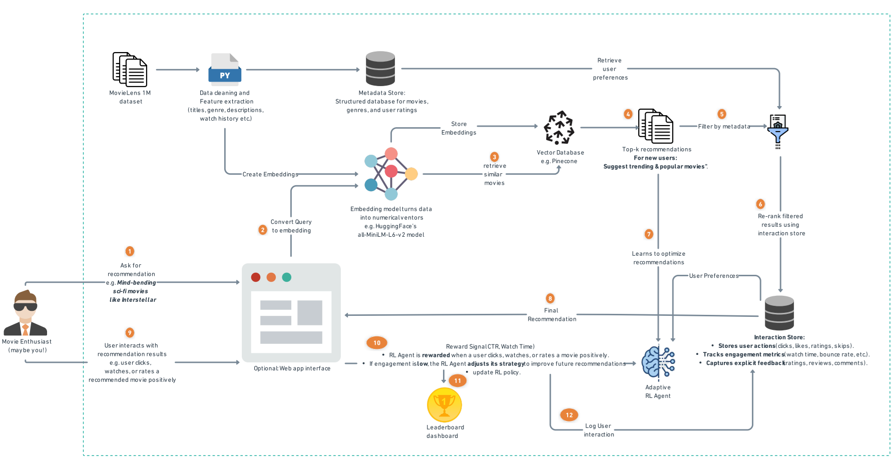
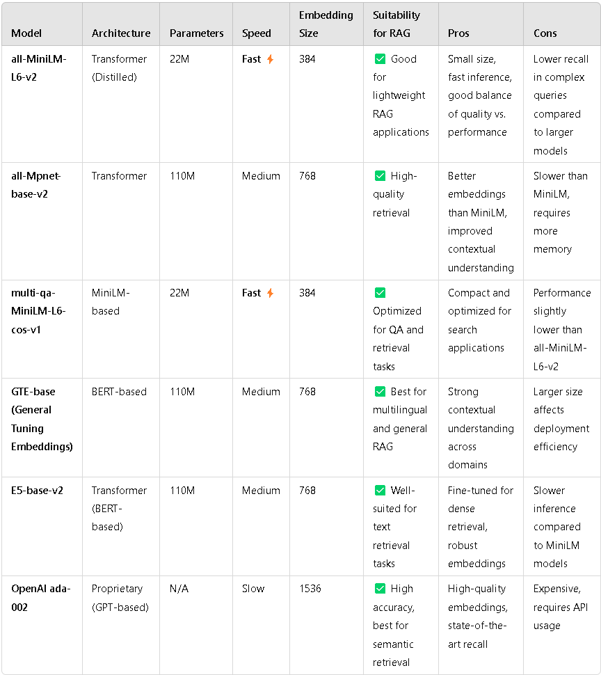
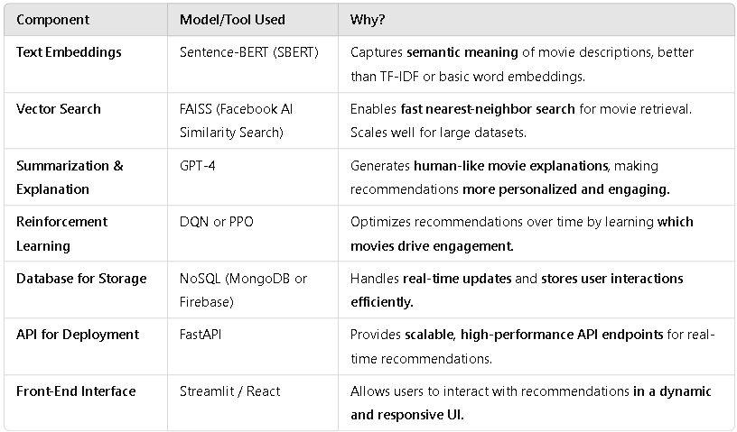

System Design of the Reinforcement Learning-Driven RAG-Based Movie Recommendation System
In this section, we explore the architecture and system design of our movie recommendation system, which integrates Retrieval-Augmented Generation (RAG) with Reinforcement Learning (RL) to enhance user engagement. Our system is structured into multiple modules, each contributing to the overall recommendation pipeline.
System Architecture Overview

Our Movie Recommendation System leverages SentenceTransformer (all-MiniLM-L6-v2) for generating high-quality
vector embeddings of movies and stores them in Pinecone, a scalable vector database for fast similarity searches.
Below, we break down how these components work together.
How We Use SentenceTransformer for Movie Embeddings
We use the SentenceTransformer model (all-MiniLM-L6-v2) to convert movie titles, genres, and release years into numerical vectors.
- Model Used: "sentence-transformers/all-MiniLM-L6-v2"
- Why this Model?
- Lightweight & Efficient: Provides fast embeddings without heavy computation.
- Captures Semantic Similarity: Embeddings capture meaning rather than just word-level similarity.
- Pretrained on Large Datasets: It understands natural language well, making it suitable for movie descriptions.

Step-by-Step Process of Creating Embeddings
- Load the Pretrained Model
model = SentenceTransformer("sentence-transformers/all-MiniLM-L6-v2")This loads the transformer model to encode movie descriptions into vector form.
- Prepare Movie Metadata for Encoding
The dataset is processed to create text-based descriptions for each movie:
df["text"] = df["title"] + " " + df["genres"] + " " + df["year"].astype(str)This ensures that embeddings are based on title, genre, and release year, allowing the model to find contextually relevant movies.
- Generate Embeddings
embedding = model.encode(row["text"], convert_to_numpy=True).tolist()This converts the text description of a movie into a high-dimensional vector representation.
How We Store Embeddings in Pinecone
- Initialize Pinecone and Set Up an Index
pc = Pinecone(api_key=PINECONE_API_KEY)This connects to Pinecone using an API key.
- Check and Create a Vector Index
if INDEX_NAME not in pc.list_indexes().names(): pc.create_index( name=INDEX_NAME, dimension=DIMENSION, metric=METRIC, spec=ServerlessSpec(cloud="aws", region=PINECONE_ENV) )- The index stores embeddings and allows efficient nearest-neighbor searches.
- The metric (e.g., cosine similarity) determines how vector similarity is calculated.
- Upsert Movie Embeddings into Pinecone Once embeddings are generated, they are uploaded in batches:
to_upsert.append((movie_id, embedding, { "title": row["title"], "genres": row["genres"], "rating": row.get("rating", "N/A"), "year": row["year"] })) index.upsert(vectors=to_upsert)- Each movie is stored with its embedding and metadata.
- Upserts (Insert/Update) ensure real-time updates.
- Retrieve Similar Movies from Pinecone When a user queries for recommendations, we:
- Encode the query into an embedding:
query_embedding = model.encode(query, convert_to_numpy=True).tolist() - Perform a similarity search
result = index.query(vector=query_embedding, top_k=5, include_metadata=True) - Return the top matching movies based on vector similarity.
- Encode the query into an embedding:
System Workflow: How RAG and RL Work Together
The recommendation system follows a structured workflow, where RAG retrieves relevant movie recommendations, and RL fine-tunes the selection to maximize user engagement.
- Step 1: User Input & Data Processing
- The system collects user preferences via explicit ratings, watch history, and engagement data (click-through rates, watch duration, etc.).
- It also leverages external sources such as IMDb and Rotten Tomatoes to gather rich metadata on movies.
- Step 2: Retrieval with RAG
The Retrieval-Augmented Generation (RAG) module is responsible for finding the most relevant movies based on user input.
- Embedding Generation: We use Sentence-BERT (SBERT) to convert movie descriptions, genres, and user reviews into numerical vector representations.This allows the system to find semantically similar movies, even if they don't share exact keywords.
- Vector Similarity Search: We implement Pinecone for fast, high-dimensional nearest-neighbor searches to identify similar movies efficiently.
- GPT-Based Summarization: Once movies are retrieved, GPT-4 is used to generate human-like explanations for recommendations.xample: “Based on your interest in sci-fi thrillers like Inception, we recommend Interstellar. It shares complex storytelling and a strong emotional arc.”
- Step 3: Reinforcement Learning for Optimization
While RAG provides relevant recommendations, it does not guarantee optimal engagement. This is where Reinforcement Learning (RL) comes in.
- Defining the RL Components:
- State: User preferences, watch history, session time, past interactions.
- Actions: Movie recommendations generated by RAG.
- Reward: Engagement metrics like click-through rate (CTR), watch duration, and likes.
- Training the RL Model:
We use Deep Q-Network (DQN) or Proximal Policy Optimization (PPO) to optimize recommendations over multiple interactions.The agent learns which types of recommendations yield the highest engagement over time.
- GPT-Based Summarization: Once movies are retrieved, GPT-4 is used to generate human-like explanations for recommendations.xample: “Based on your interest in sci-fi thrillers like Inception, we recommend Interstellar. It shares complex storytelling and a strong emotional arc.”
- Defining the RL Components:
- Step 4: Deployment & Continuous Learning
- The RAG + RL model is deployed via an API layer (FastAPI).
- The system continuously learns and improves by updating user embeddings and adjusting RL policies based on new feedback.
Models and Tools Used
